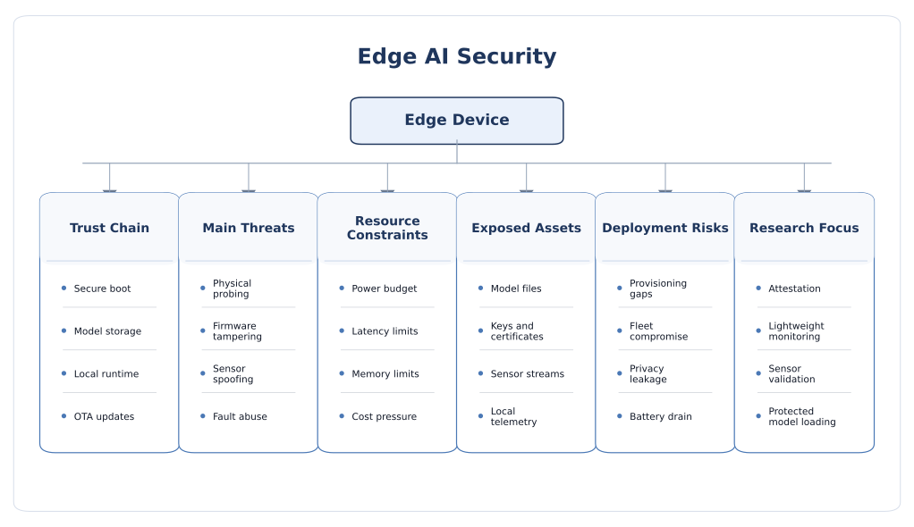
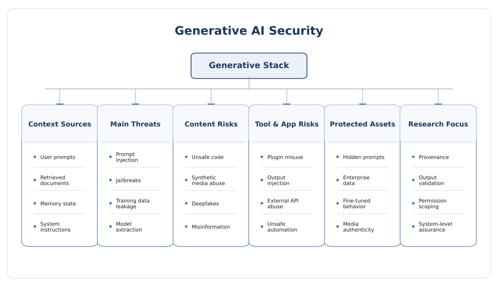
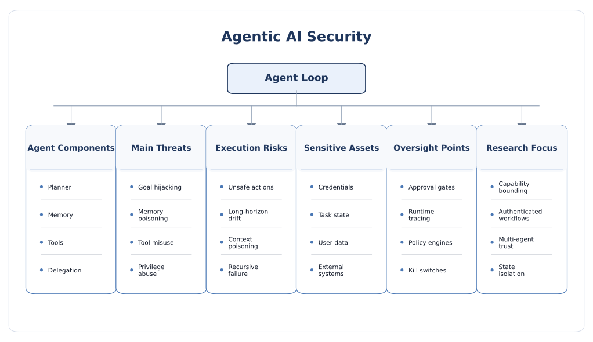
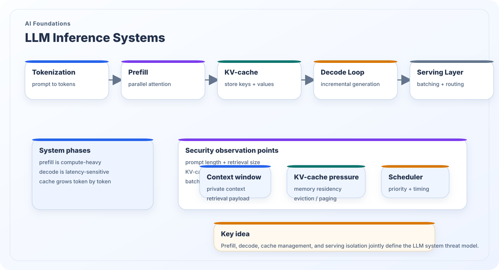

Structured map of AI security themes
This page connects direct AI security topics with the deeper systems, hardware, runtime, and memory knowledge required to analyze them rigorously in real deployments.
Direct AI security topics
These sections focus directly on attack surfaces, countermeasures, cross-layer trust, and emerging system-level security questions across modern AI deployments.

Software security
Adversarial inputs, poisoning, privacy leakage, model extraction, prompt-layer threats, and system-level software defenses.

Hardware security
Side-channel analysis, fault injection, accelerator leakage, implementation exposure, and hardware-aware trust mechanisms.

Cloud AI security
Shared infrastructure, confidential serving, control-plane trust, data exposure, and service-isolation challenges.

Edge AI security
Physical access, constrained devices, embedded accelerators, firmware trust, and deployment-realistic defenses.

Predictive AI security
Classifiers, detectors, ranking models, and forecasting pipelines under attack, drift, or adversarial control.

Generative AI security
LLMs and multimodal systems facing prompt injection, jailbreaks, misuse, provenance, and containment challenges.

Agentic AI security
Autonomous planning loops, memory, tools, permissions, orchestration logic, and boundary-setting for action.

Physical AI security
Embodied intelligence, sensing, communication, latency, control, and safety-aware trust in the real world.

Cross-layer countermeasures
Defenses spanning algorithms, runtimes, architectures, hardware hardening, and deployment governance.
Technical foundations for rigorous AI security analysis
These pages provide the systems, hardware, memory, runtime, and deployment knowledge required to interpret AI security behavior correctly. They are written as foundational companions to the direct security sections above.

Modern AI hardware knowledge
Host runtimes, memory residency, tensor engines, DMA, firmware, and security observation points that define how AI workloads actually execute on silicon.

Memory hierarchy for AI
Registers, SRAM, cache, HBM, DRAM, and host-memory movement patterns that jointly determine performance bottlenecks and leakage surfaces.

AI accelerator basics
Matrix engines, dataflow, tiling, buffering, quantization, and mapping choices that shape both throughput and physical security behavior.

LLM inference systems
Tokenization, prefill, decode, KV-cache management, batching, and serving policies that define secure large-model deployment.

CPU–GPU–NPU partitioning
How client and edge AI workloads cross processor domains, memory boundaries, runtimes, and operator-fallback paths with security implications.

Distributed AI and interconnects
Collective communication, topology, fabric visibility, and node-to-node trust questions that emerge once AI execution becomes distributed.